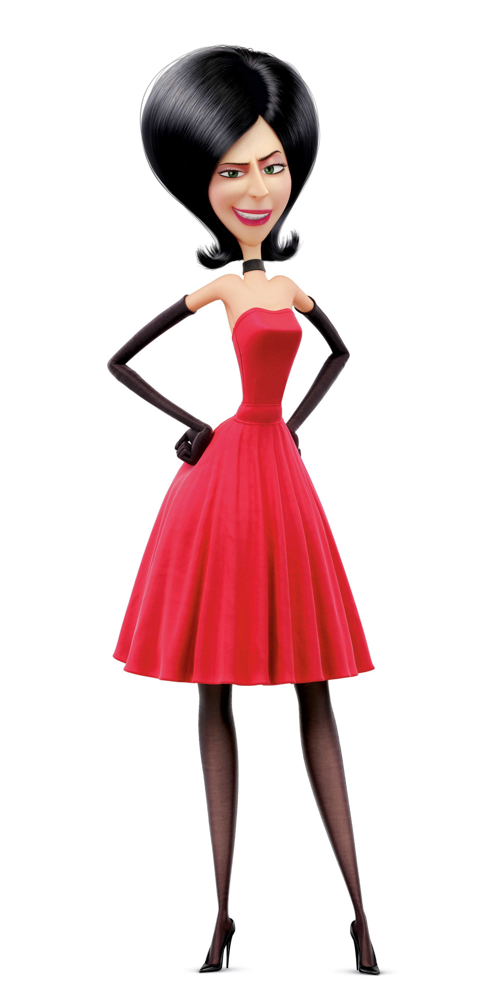

Kevin
Pierre Coffin
Kevin is the tallest Minion of the group, but not the brightest. He enjoys going on adventures, and helps keep Bob intact.
Bob
Pierre Coffin
Bob is the childish minion of the bunch. He is fond of his stuffed bear, and befriends a rat he finds in a sewer, naming it "Poochy".

Stuart
Pierre Coffin
Stuart is a very playful and intelligent Minion, and enjoys playing the guitar. He is considered to be a slacker, and would rather sit back and relax instead of being involved in crazy activities.

Gru
Steve Carell
Gru was born into a very villianous family, and he too would go to Villian-Con in Florida. Later on, he would be recruited by Dr. Nefario, as would the Minions.
The Nelson family
The Nelson family spots the three minions trying to hitchhike, and give them a ride to the villian festival in Orlando.

Scarlet Overkill
Sandra Bullock
Scarlet is an incredibly famous villian at Villian-con, who takes the Mininos under her wing after they win the competition to gain her as their boss. She intends on going to England to steal Queen Elizabeth II's crown, and recruits the Minions to help her with the job.
Herb
Jon Hamm
Herb is the husband of Scarlet Overkill, and assists her throughout all of her villian activities.